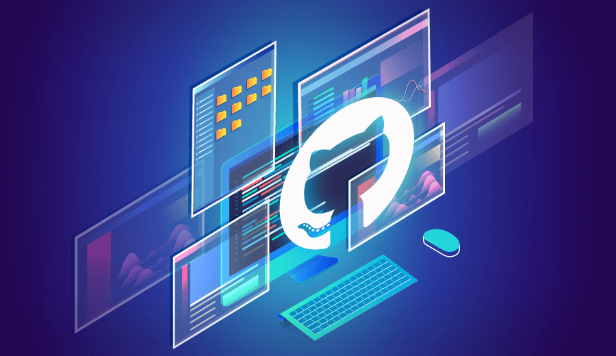

Projet de techniques de l’information et de la communication
Filiere : informatique
section :1
| Nom | Prénom | Matricule |
|---|---|---|
| AOUADI | Asma | 222231522605 |
| Boutmedjet | Racem | 222231627419 |
| BENOSMANE | Nihel | 222231581409 |
| ZEGHR | Meroua | 222231457010 |
| Gherbi | Souhil | 222231404213 |
| Sibachir | Adel | 222231580304 |
| Djeghmoum | Anis | 222231514618 |
| Chegma | Mostapha | 222231371105 |
| Azizi | Zinedine | 222231393902 |
| Okirim | Baderedine | 222231520905 |
Sommaire
Chapitre 1 :
Introduction
Chapitre 2 :
Les réseaux informatiquesChapitre 3 :
Le Modèle OSIChapitre 4 :
Internet et webChapitre 5 :
Système de Gestion de VersionChapitre 1 : Introduction
Chapitre 1
Chegma Mustapha - Okirim badr eddine
1) Les techniques de l’information et de la communication(TIC) :
Les TIC (Technologies de l'Information et de la Communication) regroupent tous les outils matériels et logiciels permettant de traiter, stocker, échanger et transmettre des informations sous forme de données, images, sons ou vidéos. Les TIC résultent de la convergence de l'informatique, des télécommunications, de l'électronique et de l'audiovisuel. Elles permettent aux utilisateurs de : - Communiquer - Accéder à l'information - Stocker des données - Manipuler - Produire Et utiliser différents médias en utilisant des techniques telles que : - l'informatique - Internet - l'audiovisuel - le multimédia2) Catégories et objectifs :
Les TIC sont classées en trois grandes catégories : - la téléinformatique, - la télécommunication et - l'électronique .Les objectifs des TIC sont : - La connectivité - La modularité - L'implantation simple - L'utilisation facile - La fiabilité.3) Composants de TIC:
La partie matérielle: les ordinateurs portables, les téléphones portables, et les robots….. . La station de travail, qui est une machine capable d'envoyer des données vers les réseaux. La partie logicielle: les systèmes d'exploitation, les logiciels d'application et d'utilisation des différents composants matériels. les réseaux d'internet ou mobiles.4) Caractéristiques:
- La rapidité : une réalisation plus rapide des activités et limitent le temps perdu pour les déplacements. - La décentralisation du pouvoir : permettre aux agents de recevoir les informations relatives à leur domaine et de contribuer à la performance de l'organisation. - Un meilleur accès aux informations : faciliter le partage d'informations au sein de l'entreprise pour une plus grande performance. - La rationalité : offrir un avantage à l'entreprise, notamment pour le partage des informations confidentielles entre deux niveaux hiérarchiques. - La mondialisation : permettre aux entreprises de participer à l'activité de la mondialisation économique grâce au tissu mondial de l'information. - La répartition : permettre à l'information de circuler entre un grand nombre de stations avec une qualité excellente. L'intensité : transmettre et de recevoir des informations à tout moment et depuis n'importe quelle région.5) Initiation aux techniques de communication:
Objectifs de communication : Les objectifs de communication sont les réactions que l'on attend du destinataire. Pour atteindre ces objectifs, il est important de définir trois dimensions : - Au niveau cognitif, l'objectif est d'attirer l'attention, de créer une notoriété et de fournir des informations sur une marque, un produit, une idée ou une entreprise. - Au stade affectif, l'objectif est de modifier ou renforcer l'image d'un produit ou d'une marque en agissant sur les attitudes ou les opinions. - Au stade comportemental, l'objectif est de modifier les comportements en incitant à l'achat ou à l'essai. -Système de communication : Les partenaires de communication : o L’émetteur. o Le récepteur. Les vecteurs : o Message. o Médias. Les fonction : o Codage. o Décodage. o Réponse. o Feedback. Bruit : il peut perturber les signaux pendant la transmission. Les types de communication : La communication est devenue un outil indispensable pour tout organisme elle prend des formes différentes nous distinguons deux types de communications : 1. La communication institutionnelle (corporate) 2. La communication commerciale ou de produit Les schémas de communication : 1. La communication interpersonnelle 2. La communication de groupe 3. La communication de masse Média et Multimédia : 1. Média . 2. Multimédia .Chapitre 2 : Les réseaux informatiques
Chapitre 2
Benosmane Nihel - Azizi zineddine
1) Réseau (informatique) Network:
• Définition d'un réseau informatique ( un ensemble d'ordinateurs et de terminaux connectés entre eux pour échanger des informations numériques selon des règles définies) . • Mise en réseau (Networking) : mise en œuvre des outils et des tâches qui permettent de relier des ordinateurs pour partager des ressources. • Les réseaux informatiques intègrent des données, et aussi la voix et la vidéo.2) Les caractéristiques de base d'un réseau :
• La topologie qui définit l'architecture d'un réseau, qui se divise en deux : la topologie physique (manière dont les équipements sont interconnectés) et la topologie logique (manière dont les équipements communiquent). • Le débit (mesure la quantité de données transmises par seconde). • La distance maximale qui dépend de la technologie utilisée. • Le nombre de nœuds maximum pouvant être interconnectés.3) Quelques terminologies en réseau :
• Station de travail : une machine capable d'envoyer des données vers les réseaux. • Nœud : une station de travail, une imprimante, un serveur ou toute entité pouvant être adressée par un numéro unique. • Paquet : la plus petite unité d'information pouvant être envoyée sur le réseau.4) Éléments d'un réseau :
• Les ordinateurs équipés d'une carte de communication. • Les logiciels comme le navigateur, le client de messagerie, le serveur web, ……etc. • Les supports de connexion comme les câbles, les prises, les lignes téléphoniques, …….etc. • Les équipements d'interconnexion comme le répéteur, le concentrateur, le commutateur, le routeur, ……etc.5) Classification des réseaux :
• Classification par portée : LAN (Local Area Network), MAN (Métropolitan Area Network), WAN (Wide Area Network) et d'autres types. • Classification par ouverture : Intranet, Extranet, Internet. • Classification par support de connexion : réseaux filaires et réseaux sans fil. • Classification par type d'organisation : Peer to Peer et client-serveur.6) Le type de topologie :
• Différents types de topologies : bus, étoile, anneau, maillée. • Description et caractéristiques de chaque type de topologieChapitre 3 : Le Modèle OSI

Chapitre 3
Boutmedjet Mohamed Racem - Djeghmoume Anis
1) Les Composants matériel d’un Réseau informatique
• Les cartes réseau: -aussi appelées cartes d'interface réseau, elles permettent aux ordinateurs de se connecter à un resau, elles sont installées à l'intérieur de l'ordinateur. -Les cartes réseau jouent un rôle essentiel car elles permettent de transmettre et de recevoir des données via des protocoles de communication spécifique (TCP/IP). • SWITCH: -c'est un composant matériel utilisé pour connecter des appareils sur un réseau local, il permet à plusieurs appareils de communiquer entre eux en utilisant des adresses MAC. -Lorsqu'un appareil se connecte au switch, il vérifie son adresse MAC et stocke cette information dans une table de correspondance, ils utilise cette table pour envoyer les données uniquement à un autre appareil qui communique avec lui. -Les switches sont utilisés pour les réseaux domestiques et les réseaux d'entreprise de grande envergure. Ils peuvent offrir des fonctionnalités avancées telles que la gestion des VLAN, la qualité de service (QoS) et la gestion du trafic. • HUB : -Le hub est un équipement utilisé pour connecter plusieurs appareils sur un réseau local. Il opère en tant que répéteur, envoyant les données reçues à tous les appareils connectés, sans la fonctionnalité de table de correspondance présente dans un switch. -Les hubs ont été remplacés par les switches qui permettent une gestion plus efficace du trafic et une communication plus rapide et sécurisée entre les appareils connectés.2) Le Modèle OSI
-est un modèle de référence pour les communications de réseau qui divise les communications en sept couches distinctes: • La couche physique • La couche liaison de données • La couche réseau • La couche transport • La couche session • La couche présentation • La couche application3) Le Modèle TCP/IP
-Le modèle TCP/IP est un modèle de référence pour les communications de réseau, utilisé pour la conception et la mise en œuvre des réseaux informatiques modernes, divisé en quatre couches principales: • La couche liaison de données • La couche réseau • La couche transport • La couche application4) L’adressage
-Les communications dans un réseau obéissent à des règles : • Adressage de deux unités en communication • Architecture qui définit les rôles endossés par les deux unités • Protocoles qui assurent l'échange des données C’est quoi un adressage IP : -Une adresse IP est le numéro qui identifie chaque ordinateur dans les réseaux qu’il appartient. Il y’a deux modes: 1. ADRESSE IPV4 2. ADRESSE IPV65) L’adresse IPV4
-Les 4 octets composent deux parties une partie pour Partie réseau et l’autre pour la partie hôtes : • Chaque adresse IPV4 contient: o Adresse réseau o Adresse hôte • On reconnait qu’un réseau est un {hôte} quand la valeur des bits pour la partie réseau est la même. • Le nombre des bits contenus dans la partie hôtes détermine le nombre des machines possible sur ce réseau. -Les différents types d’adresse IPV4: 1) L’adresse réseau 2) L’adresse de diffusion 3) L’adresse hôtes 4) Le masque de réseau et de sous réseauxChapitre 4 :Internet et web

Chapitre 4
Gherbi Souhil - Sibachir Adel
1)Introduction :
.Le web et internet : Le World Wide Web (WWW) est un système hypertexte public qui contribue au contenu en ligne. Il permet aux utilisateurs d’accéder à des pages en ligne qui sont liées entre elles par des hyperliens et a été créé par Tim Berners-Lee et Robert Cailliau. Une composante d’Internet, qui sert de plateforme de communication générale, est le Web. .Principe World Wide Web : Les principes directeurs du World Wide Web exigent l’accès à des documents texte stockés sur des appareils connectés à Internet et connectés les uns aux autres par des liens hypertextes. Le but d’Internet aujourd’hui est de fournir une variété de ressources, y compris le texte, les photos, audio, vidéo, et le contenu interactif comme les achats en ligne ou les débats. .URL : Les URL (Uniform Resource Locators) jouent un rôle crucial sur le web en permettant aux utilisateurs de suivre les liens hypertextes pour ouvrir de nouveaux sites. Une URL est un nom qui identifie spécifiquement l’emplacement d’une ressource et inclut à la fois l’adresse du serveur et l’adresse de la page particulière. (modifié)2)Aspects techniques du Web :
Sur le plan technique, le web repose sur trois mécanismes de base : les URL, qui permettent d’accéder à un groupe de ressources en utilisant le protocole DNS, HTTP, qui établit la communication client-serveur en l’absence d’état, et HTML, qui décrit les pages Web en utilisant des titres pour organiser le contenu, ce qui peut inclure du texte, des images et des hyperliens.3)Page web et site web :
page Web est un document multimédia composé d’éléments comprenant des titres, des extraits de texte, des graphiques et des liens. Elle est décrite en utilisant le langage de description HTML (HyperText Markup Language) et stockée dans un fichier. Un navigateur interprète et affiche une page Web, et une adresse (URL) est nécessaire pour la visualiser. Un site Web rassemble un certain nombre de pages Web autour d’un seul sujet qui sont connectés via des liens hypertexte. La structure des sites Web est une accumulation de fichiers et de dossiers.4)Création d’une page web HTML :
La création d'une page web HTML implique l'utilisation de balises pour structurer le document. Les balises de base comprennent "<"html">", "<"head">", "<"title">" et "<"body">". Les balises de titre ("<"h1">" à "<"h6">") sont utilisées pour définir les niveaux de titre, tandis que la balise de paragraphe ("<"p">") est utilisée pour structurer le contenu en paragraphes. -En conclusion : le World Wide Web est un système hypertexte public qui permet aux utilisateurs d’accéder au contenu texte connecté les uns aux autres par des liens hypertextes. Il est basé sur des mécanismes techniques comme les URL, le protocole HTTP et le langage HTML. Les sites Web regroupent plusieurs pages centrées sur un sujet commun. Les pages Web sont des documents multimédias interprétés par les navigateurs. Une balise doit être utilisée pour organiser le contenu lors de la création d’une page Web HTML.Chapitre 5 :Système de Gestion de Version

Chapitre 5
Aouadi Asma - Zeghar Meroua
1) Introduction
Dans ce chapitre, nous allons définir ce que sont Git et GitHub afin d’éviter des confusions plus tard. Nous allons également comprendre pourquoi Git est si populaire et pourquoi les systèmes de gestion de version sont incontournables aujourd’hui. -Qu’est-ce que Git ? Git est un logiciel de versioning créé en 2005 par Linus Torvalds, le créateur de Linux. Un logiciel de versioning, ou logiciel de gestion de version est un logiciel qui permet de conserver un historique des modifications effectuées sur un projet afin de pouvoir rapidement identifier les changements effectués et de revenir à une ancienne version en cas de problème.2) A quoi sert concrètement un système de gestion de version ?
chaque développeur possède une version actualisée du site pour tester et implémenter ses fonctionnalités. Ici, l’idée la plus logique serait de mettre en place un serveur distant qui contiendrait l’historique des modifications faites par chaque développeur afin que chacun ait accès aux avancées des autres. Chaque développeur pourrait également copier l’intégralité du contenu du serveur pour travailler en local sur sa machine. On vient ainsi de créer un système de gestion de version décentralisé rudimentaire. Les développeurs travaillant avec Git ont accès à l’historique des modifications pour l’intégralité du projet et peuvent ainsi savoir quels changements ont été fait par rapport à leur version des fichiers, qui a fait ces changements, etc...3) Les deux modèles des logiciels de gestion de version :
Les logiciels de gestion de version sont aujourd’hui tous construits sur l’un des deux modèles suivants : le modèle centralisé ou le modèle décentralisé encore appelé modèle distribué. Le principe de base d’un modèle centralisé est la centralisation du code source lié au projet : la source du code du projet est hébergée sur un serveur distant central et les différents utilisateurs doivent se connecter à ce serveur pour travailler sur ce code. Le modèle distribué a été popularisé par Git et présente différents avantages notables par rapport au modèle centralisé • Sécurité : Comme chaque utilisateur possède le code complet d’un projet, on peut utiliser la copie du projet d’un utilisateur comme back-up en cas de corruption du serveur central.4) Qu’est-ce que GitHub ?
GitHub est un service en ligne qui permet d’héberger des dépôts ou repo Git. C’est le plus grand hébergeur de dépôts Git du monde. Une grande partie des dépôts hébergés sur GitHub sont publics, ce qui signifie que n’importe qui peut télécharger le code de ces dépôts et contribuer à leur développement en proposant de nouvelles fonctionnalités.5) Utiliser Git : ligne de commande, console et interface graphique
On peut utiliser différents types d’interfaces pour installer et pour utiliser Git6) Installation de Git
La façon la plus simple d’installer Git est de télécharger la dernière version sur le site officiel http://git-scm.com/downloads , d’ouvrir le fichier téléchargé et de suivre les instructions à l’écran en laissant toutes les valeurs par défaut.7) Paramétrage de Git
Pour faire cela, nous allons utiliser notre première commande Git qui est la commande git config. Nous allons également passer une option --global à notre commande. Ici, l’option --global va nous permettre d’indiquer à Git que le nom d’utilisateur et l’adresse mail renseignés doivent être utilisés globalement . «Redouane» et git config --global user.email redouane.bouchekir@gmail.com à la suite pour renseigner un nom et une adresse email. Bien évidemment, utilisez votre propre nom et votre propre adresse email. Pour vous assurer que vos informations ont bien été enregistrées, vous pouvez taper git config user.name et git config user.email.8) Démarrer un dépôt Git
Un «dépôt» correspond à la copie et à l’importation de l’ensemble des fichiers d’un projet dans Git. • On peut cloner un dépôt Git déjà existant. Nous allons voir comment faire cela dans la suite de ce cours.9) La gestion des informations selon Git
Grosso modo, à chaque fois qu’on va valider ou enregistrer l’état d’un projet dans Git, il va prendre un instantané du contenu de l’espace de travail à ce moment et va enregistrer une référence à cet instantané pour qu’on puisse y accéder par la suite. Chaque instantané est stocké dans une base de données locale, c’est-à-dire une base de données située sur notre propre machine.10) Les états des fichiers
Lorsqu’on démarre un dépôt Git en important un répertoire déjà existant depuis notre machine, les fichiers sont au départ tous non suivis. Git déjà existant, c’est différent puisqu’on copie tout l’historique du projet et donc les fichiers sont tous déjà suivis par défaut. Lors du démarrage d’un dépôt Git à partir d’un dépôt local, on demande à Git de valider l’ensemble des fichiers du projet. Lors du clonage d’un dépôt déjà existant, les fichiers sont enregistrés par défaut en base et ils sont donc validés par défaut. Les fichiers modifiés vont être considérés comme «modifiés» par Git tandis que les nouveaux fichiers vont être «non suivis». Enfin, lorsqu’on demande à Git de prendre l’instantané, c’est-à-dire lorsqu’on lui demande d’enregistrer en base l’état du projet actuel , les fichiers faisant partie de l’instantané sont à nouveau considérés comme «validés» et le cycle peut recommencer.11) Les zones de travail
En fonction de son état, un fichier va pouvoir apparaitre dans telle ou telle zone de travail. Tant qu’un fichier n’est pas indexé, il possède l’état modifié ou est non suivi si c’est un nouveau fichier. Dès qu’il est indexé i.e que son nom est ajouté à la zone d’index, il possède l’état indexé.12) Créer un dépôt Git à partir d’un répertoire existant
"Pour la suite de cette leçon, je vais créer un répertoire "projet-git" qui se trouve sur mon bureau et qui contient deux fichiers texte vides "fichier1. Ce répertoire va me servir de base pour les exemples qui vont suivre . sert à de placer dans un répertoire. Lorsqu’on utilise git init, Git nous renvoie un message en nous informant que le dépôt Git a bien été initialisé et qu’il est vide. C’est tout à fait normal puisque nous n’avons encore versionné aucun fichier . On peut utiliser ici la commande git status pour déterminer l’état des fichiers de notre répertoire. "Ici, git status nous informe que notre projet possède deux fichiers qui ne sont pas sous suivi de version et qui sont les fichiers "README. Il nous dit aussi qu’aucun fichier n’a été validé en base pour le moment ni ajouté pour validation. L’étape suivante va donc ici être d’indexer nos fichiers afin qu’ils puissent ensuite être validés, c’est-à-dire ajoutés en base et qu’on puisse ainsi avoir un premier historique de version. Pour indexer des fichiers, on utilise la commande git add. On peut lui passer un nom de fichier pour indexer le fichier en question, le nom d’un répertoire pour indexer tous les fichiers du répertoire d’un coup ou encore un "fileglob" pour ajouter tous les fichiers correspondant au schéma fourni. Les fileglobs utilisent les extensions de chemin de fichier. Txt, je demande finalement à Git d’ajouter à l’index tous les fichiers du projet qui possèdent une extension . Git status nous dit qu’on a maintenant deux nouveaux fichiers ajoutés à l’index. Ici, on est certains que nos deux nouveaux fichiers ont bien été ajoutés à l’index puisqu’ils apparaissent dans la section "changes to be committed" . Pour valider ces fichiers et les ajouter en base, on va maintenant utiliser la commande git commit. Ici, on nous demande d’ajouter un message avec notre commit. Bien documenter chaque commit permet aux auteurs et aux différents contributeurs à un projet de rapidement comprendre les modifications et de pouvoir les valider. Ici, j’ajoute simplement le message "Version initiale du projet".13) Cloner un dépôt Git
Pour cela, on va utiliser la commande Git clone.14) Ajouter ou modifier des fichiers dans un projet et
A ce niveau, nous avons donc d’un côté notre projet contenant un ensemble de fichiers et de ressources sur lesquelles on travaille ainsi qu’un dépôt Git qui sert à gérer les différentes versions de notre projet. En continuant à travailler sur notre projet, nous allons être amenés à ajouter, modifier, voire supprimer des fichiers. On va indiquer tous ces changements à Git pour qu’il conserve un historique des versions auquel on pourra ensuite accéder pour revenir à un état précédent du projet . A chaque fois qu’on souhaite enregistrer une modification de fichier ou un ajout de fichier dans le dépôt Git, on va devoir utiliser les commandes git add et git commit comme on a pu le faire dans la leçon précédente. Si vous souhaitez enregistrer toujours la dernière version d’un fichier, pensez donc bien toujours à effectuer un git add juste avant un git commit.15) Consulter l’historique des modifications Git
La manière la plus simple de consulter l’historique des modifications Git est d’utiliser la commande git log. Cette commande affiche la liste des commits réalisés du plus récent au plus ancien. Par défaut, chaque commit est affiché avec sa somme de contrôle SHA-1, le nom et l’e-mail de l’auteur, la date et le message du commit.16) Annuler des modifications apportées à un fichier
Après un commit, on va continuer à travailler sur nos fichiers et à les modifier. Parfois, certaines modifications ne vont pas apporter les comportements espérés et on voudra revenir à l’état du fichier du dernier instantané Git .17) Qu’est ce qu’une branche ?
Une branche, dans Git, est simplement un pointeur vers un commit . Pour rappel, lorsqu’on effectue un commit, Git stocke en fait un objet commit qui contient les nom et prénom de l’auteur du commit, le message renseigné lors de la création du commit ainsi qu’un pointeur vers l’instantané du contenu indexé et des pointeurs vers le ou les commits précédant directement le commit courant. Un pointeur est un objet qui contient l’adresse d’une donnée stockée quelque part. On peut utiliser le pointeur pour accéder à la donné en question. La branche par défaut dans Git s’appelle master. Cette branche master va se déplacer automatiquement à chaque nouveau commit pour pointer sur le dernier commit effectué tant qu’on reste sur cette branche. L’idée est que lorsqu’on tape une commande git init, une branche est automatiquement créée et que le nom donné à cette branche par Git par défaut est «master». En résumé, une branche est un pointeur vers un commit en particulier. Un commit est un objet qui contient un pointeur vers l’instantané du contenu indexé ainsi que des pointeurs vers le ou les commits le précédant directement.